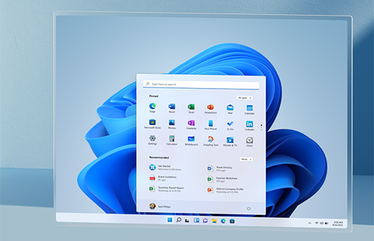
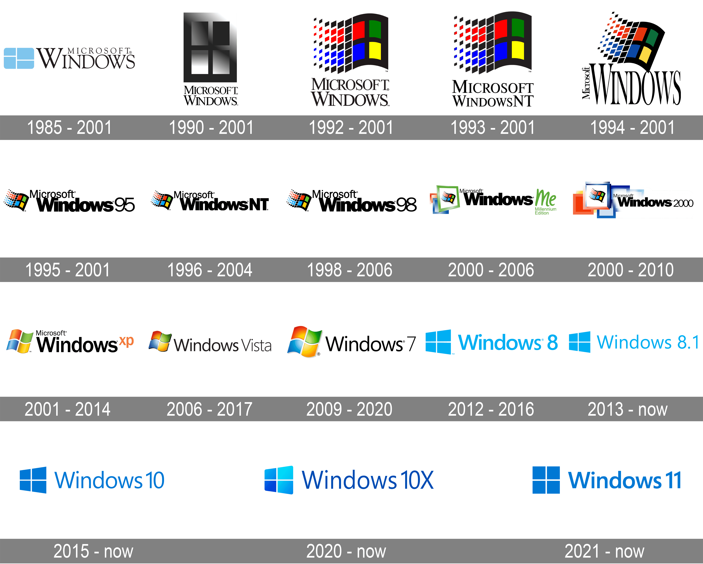
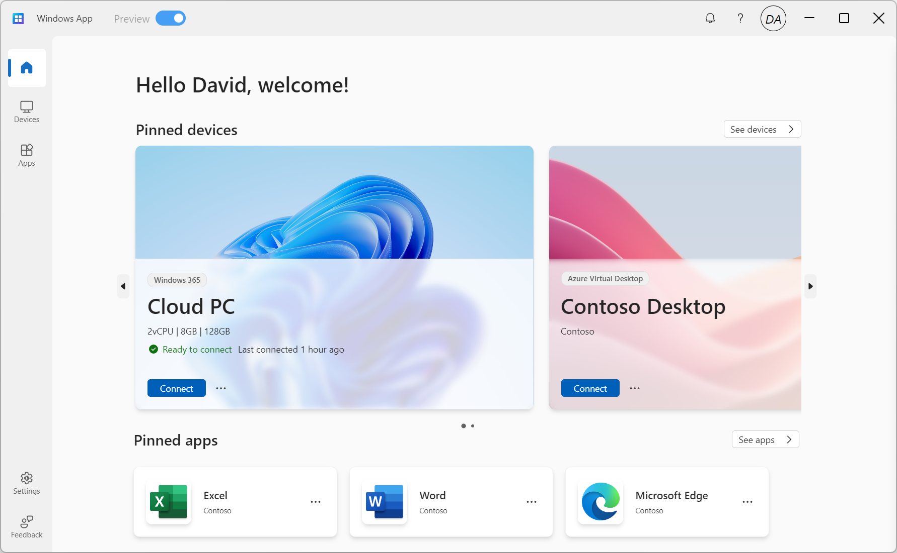
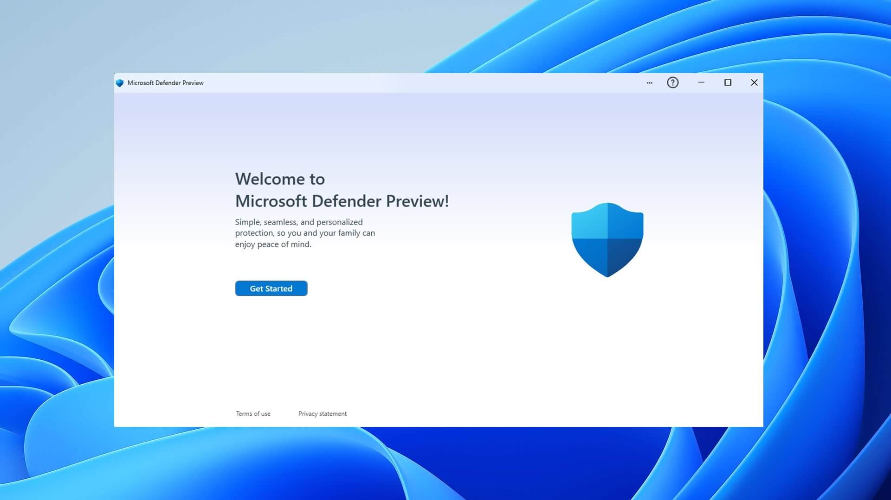

Windows
1. Windows - Kirish
Windows — Microsoft tomonidan ishlab chiqilgan operatsion tizim bo'lib, shaxsiy kompyuterlar, planshetlar va smartfonlarda keng qo'llaniladi. Windows operatsion tizimi o'zining intuitiv foydalanuvchi interfeysi, keng dasturiy ta'minot qo'llab-quvvatlashi va oson sozlanishi bilan tanilgan. Bu tizim birinchi marta 1985-yilda chiqarilgan va o'shandan beri ko'plab versiyalarni ishlab chiqdi, ularning har biri oldingilariga nisbatan ko'proq imkoniyatlar va yaxshilanishlarni taqdim etdi.
Windows Tarixi
Windowsning ilk versiyasi Windows 1.0 bo'lib, u 1985-yilda chiqarilgan. O'shandan keyin, 1995-yilda chiqarilgan Windows 95 operatsion tizimi bilan muhim qadam qo'yildi. Windows 95 Start tugmasi va taskbar kabi yangi interfeys elementlari bilan ajralib turardi. Shundan beri Windows XP, Windows Vista, Windows 7, Windows 8, Windows 10 va hozirgi kunda Windows 11 kabi ko'plab versiyalar ishlab chiqildi.
Windowsning Ahamiyati
Windows operatsion tizimi dunyo bo'ylab millionlab foydalanuvchilar tomonidan ishlatiladi. U nafaqat shaxsiy kompyuterlar, balki serverlar, tarmoqlar va boshqa ko'plab sohalarda ham qo'llaniladi. Windows foydalanuvchilariga keng ko'lamli dasturiy ta'minot va xizmatlarni taqdim etadi, shu jumladan, Microsoft Office, Edge veb-brauzeri va OneDrive bulutli xizmati.
Asosiy Funksiyalari
- Grafik Foydalanuvchi Interfeysi (GUI): Windows tizimida ishlashni osonlashtiradigan intuitiv va vizual interfeys mavjud.
- Ko'p vazifalik: Bir vaqtning o'zida bir nechta dasturlarni ishlatish imkoniyati.
- Dastur qo'llab-quvvatlashi: Windows turli xil dasturlarni qo'llab-quvvatlaydi, jumladan, professional dasturiy ta'minot, o'yinlar va ta'limiy vositalar.
- Xavfsizlik: Windows tizimlarining yangi versiyalari rivojlangan xavfsizlik funksiyalari bilan jihozlangan, jumladan, Windows Defender va muntazam xavfsizlik yangilanishlari.
Windows operatsion tizimi o'zining qulayligi, keng qo'llanilishi va keng dasturiy ta'minot qo'llab-quvvatlashi bilan dunyo bo'ylab mashhurdir. Uning muntazam yangilanishlari va yangi versiyalari doimiy ravishda foydalanuvchilarning ehtiyojlarini qondirib, zamonaviy texnologiyalar bilan hamnafas bo'lib turadi.
2. Windows Arxitekturasi
Windows operatsion tizimi o'zining murakkab va yaxshi optimallashtirilgan arxitekturasi bilan ajralib turadi. Bu arxitektura tizimning ishonchliligi, xavfsizligi va samaradorligini ta'minlaydi. Windows arxitekturasi bir nechta asosiy komponentlardan tashkil topgan bo'lib, ularning har biri o'z vazifasini bajaradi va bir-biriga muvofiq ishlaydi. Quyida Windows arxitekturasi haqida batafsil ma'lumot berilgan:
Yadro (Kernel)
Yadro - Windows operatsion tizimining yuragi bo'lib, u tizim resurslarini boshqaradi va apparat bilan dasturiy ta'minot o'rtasidagi vositachilikni ta'minlaydi. Yadro ikkiga bo'linadi:
- Microkernel: Bu yadro operatsion tizimning eng asosiy funktsiyalarini, masalan, jarayonlarni boshqarish, xotirani boshqarish va keshlashni bajaradi.
- Executive Services: Bu bo'lim tizim xizmatlari, haydovchi dasturlar va boshqa yadro darajasidagi komponentlarni boshqaradi.
Aparat Abstraktsiyasi Qatlami (HAL)
HAL - bu apparat qatlamidan yuqoriroqda joylashgan dasturiy ta'minot komponenti bo'lib, operatsion tizimni apparatning xususiyatlaridan mustaqil qiladi. Bu qatlam orqali Windows turli xil apparat platformalarida ishlay oladi.
Xotirani Boshqarish
Windows xotira boshqarish tizimi virtual xotira yordamida fizik xotirani samarali boshqaradi. Bu xotira boshqarish tizimi quyidagi funksiyalarni bajaradi:
- Virtual Xotira: Dasturlarni ishlatishda fizik xotira cheklovlarini engib o'tish imkonini beradi.
- Xotira Xaritalash: Xotira bloklarini jarayonlarga xaritalash orqali samarali boshqarish.
I/O Tizimi
I/O tizimi kirish-chiqish qurilmalarini boshqaradi va dasturlarga apparat bilan ishlash uchun standart interfeyslarni taqdim etadi. Bu tizim quyidagi qismlardan iborat:
- I/O Manager: I/O so'rovlarini boshqaradi va kirish-chiqish operatsiyalarini amalga oshiradi.
- Driverlar: Har bir kirish-chiqish qurilmasi uchun mos keladigan haydovchi dasturlar mavjud.
Xavfsizlik
Windows xavfsizlik arxitekturasi tizim va foydalanuvchi ma'lumotlarini himoya qilish uchun mo'ljallangan. Bu arxitektura quyidagi komponentlardan iborat:
- Local Security Authority (LSA): Tizimdagi barcha xavfsizlik siyosatlarini boshqaradi.
- Security Reference Monitor (SRM): Tizimdagi barcha kirish huquqlarini boshqaradi va himoya qiladi.
- Encrypted File System (EFS): Foydalanuvchi ma'lumotlarini shifrlash orqali himoya qiladi.
Tarmoq Tizimi
Windows tarmoq tizimi turli tarmoq protokollarini qo'llab-quvvatlaydi va tarmoq bilan bog'liq operatsiyalarni amalga oshiradi. Bu tizim quyidagi komponentlardan iborat:
- Network Driver Interface Specification (NDIS): Tarmoq haydovchilarini boshqarish uchun standart interfeys.
- Transport Driver Interface (TDI): Tarmoq transport protokollarini boshqaradi.
Foydalanuvchi Rejim Komponentlari
Bu komponentlar foydalanuvchi ilovalariga xizmat qiladi va yadro komponentlari bilan o'zaro aloqada bo'ladi. Quyidagi asosiy komponentlar mavjud:
- Win32 API: Windows ilovalari uchun dastur interfeysi.
- Subsystems: Turli dasturlar va xizmatlar uchun subsistemlar, masalan, POSIX va OS/2 subsistemlari.
Windows operatsion tizimi murakkab arxitekturaga ega bo'lib, uning har bir komponenti tizimning samarali va ishonchli ishlashini ta'minlaydi. Ushbu arxitektura turli xil apparat platformalarida ishlay olishi va foydalanuvchilarga keng imkoniyatlar taqdim etishi bilan ajralib turadi.
3. Windows Foydalanuvchi Interfeysi
Windows foydalanuvchi interfeysi (UI) — bu foydalanuvchilarning operatsion tizim bilan o'zaro aloqasini ta'minlovchi grafikalarning yig'indisi. Windowsning foydalanuvchi interfeysi foydalanish uchun qulayligi, chiroyliligi va funksionalligi bilan ajralib turadi. Quyida Windows UI ning asosiy elementlari haqida batafsil ma'lumot berilgan:

Start Menyu
Start menyu Windowsning markaziy boshqaruv nuqtasi bo'lib, dasturlarni ishga tushirish, fayllarga kirish va tizim sozlamalarini boshqarish imkonini beradi. U birinchi marta Windows 95 da joriy etilgan va hozirgi kunga qadar bir necha marta takomillashtirilgan.
Taskbar (Vazifalar paneli)
Taskbar ekranning pastki qismida joylashgan bo'lib, faol dasturlar va tizim holati haqida ma'lumot beradi. Taskbarning chap tomonida Start menyu tugmasi joylashgan, o'ng tomonida esa tizim tray (sistem tray) mavjud bo'lib, unda soat va boshqa tizim xabarlari ko'rsatiladi.
File Explorer
File Explorer (Fayl kashfiyotchisi) — bu Windowsdagi fayllar va papkalar bilan ishlash uchun mo'ljallangan dastur. U orqali foydalanuvchilar fayllarni ko'rish, tahrirlash, ko'chirish va o'chirish imkoniyatiga ega. File Explorer interfeysi oddiy va intuitiv bo'lib, foydalanuvchilarga kerakli fayllarni tezda topish imkonini beradi.
Windows Settings (Sozlamalar)
Windows Settings — bu operatsion tizimning barcha asosiy sozlamalarini boshqarish uchun mo'ljallangan markaziy joy. Bu yerda foydalanuvchilar tizim yangilanishlarini, xotira sozlamalarini, tarmoqqa ulanish va boshqa ko'plab parametrlarni boshqarishlari mumkin.
Notification Center (Bildirishnoma markazi)
Notification Center — bu foydalanuvchilarga tizim xabarlari va bildirishnomalarini ko'rsatadigan panel. U Windows 10 da joriy etilgan va foydalanuvchilarga muhim xabarnomalarni ko'rib chiqish va ularga tezda javob berish imkonini beradi.
Windows foydalanuvchi interfeysi qulay va samarali ishlashni ta'minlash uchun mo'ljallangan. Uning Start menyu, Taskbar, File Explorer, Windows Settings va Notification Center kabi asosiy komponentlari foydalanuvchilarga tizimni boshqarish va kundalik vazifalarni bajarish imkoniyatlarini taqdim etadi. Ushbu elementlarning barchasi Windows operatsion tizimining foydalanish uchun qulay va samarali ekanligini ta'minlaydi.
4. Windows Dasturlarini Boshqarish
Windows operatsion tizimida dasturlarni boshqarish muhim va qulaylik yaratuvchi funksiyalardan biridir. Quyida Windows tizimida dasturlarni boshqarishning asosiy usullari haqida ma'lumotlar keltirilgan:
Task Manager (Vazifalar boshqaruvchisi)
Task Manager - bu foydalanuvchilarga faol dasturlarni, jarayonlarni va tizim resurslaridan foydalanishni ko'rsatadigan qulay vositadir. Task Manager yordamida foydalanuvchilar dasturlarni to'xtatish, jarayonlarni tugatish va resurslar taqsimotini kuzatish imkoniyatiga ega. U Ctrl + Shift + Esc tugmalari orqali ochiladi.
Control Panel (Boshqaruv paneli)
Control Panel Windowsning klassik sozlamalar panelidir. Bu yerda foydalanuvchilar tizim va dasturlar sozlamalarini boshqarishlari mumkin. Control Panel orqali dasturlarni o'rnatish yoki olib tashlash, foydalanuvchi hisoblarini boshqarish va tizim xavfsizlik sozlamalarini o'zgartirish mumkin.
Settings (Sozlamalar)
Windows 10 va undan keyingi versiyalarda Control Panel o'rnini egallagan Settings ilovasi mavjud. Bu ilova orqali foydalanuvchilar dasturlarni o'rnatish, olib tashlash va yangilash imkoniyatiga ega. Settings ilovasi interfeysi intuitiv va zamonaviy ko'rinishga ega.
Program and Features (Dasturlar va Xususiyatlar)
Program and Features bo'limi Control Panel ichida joylashgan bo'lib, bu yerda o'rnatilgan dasturlar ro'yxati va ularni olib tashlash yoki o'zgartirish imkoniyatlari mavjud. Bu bo'lim orqali keraksiz dasturlarni osonlik bilan olib tashlash mumkin.
Windows Store (Microsoft Store)
Windows Store yoki Microsoft Store - bu Microsoft tomonidan taqdim etilgan rasmiy dasturlar do'koni. Bu do'konda foydalanuvchilar turli xil dasturlar, o'yinlar, filmlar va kitoblarni yuklab olishlari va o'rnatishlari mumkin. Microsoft Store orqali dasturlarni avtomatik yangilash ham amalga oshiriladi.
Windows operatsion tizimi dasturlarni boshqarishning bir necha qulay usullarini taqdim etadi. Task Manager, Control Panel, Settings, Program and Features va Windows Store kabi vositalar orqali foydalanuvchilar dasturlarni o'rnatish, olib tashlash, yangilash va boshqarish imkoniyatiga ega. Bu vositalar Windows tizimini samarali va qulay boshqarishni ta'minlaydi.
5. Windows Xavfsizligi
Windows operatsion tizimi foydalanuvchi ma'lumotlarini va tizim resurslarini himoya qilish uchun keng ko'lamli xavfsizlik funksiyalarini taqdim etadi. Quyida Windows xavfsizligini ta'minlashning asosiy elementlari haqida batafsil ma'lumot berilgan:
Windows Defender Antivirus
Windows Defender Antivirus — bu Windows operatsion tizimiga kiruvchi xavfsizlik vositasi bo'lib, u viruslar, zararli dasturlar va boshqa tahdidlardan himoya qiladi. Windows Defender real vaqtda himoya, xotira skanerlash va avtomatik yangilanish kabi funksiyalarni taqdim etadi.
Firewall (Olov devori)
Windows Firewall tizimni tashqi tarmoqdan keladigan tahdidlardan himoya qiladi. U kiruvchi va chiquvchi tarmoq trafikini nazorat qiladi va xavfsizlik siyosatiga asoslangan ravishda ruxsat berilgan yoki taqiqlangan trafikni belgilaydi. Windows Firewall foydalanuvchilarga qo'shimcha xavfsizlik qoidalarini sozlash imkonini beradi.
Windows Update
Windows Update — bu tizim va dasturlar uchun yangilanishlarni avtomatik ravishda yuklab olish va o'rnatish vositasi. Bu yangilanishlar xavfsizlik patchlari, yangi funksiyalar va tizim barqarorligini oshirish uchun mo'ljallangan bo'lishi mumkin. Yangilanishlarni o'z vaqtida o'rnatish Windows tizimini himoyalangan holda saqlashga yordam beradi.
User Account Control (Foydalanuvchi hisobini nazorat qilish)
User Account Control (UAC) — bu foydalanuvchi hisoblarini boshqarish va tizimdagi potentsial xavfli o'zgarishlarni nazorat qilish uchun mo'ljallangan vositadir. UAC foydalanuvchi ruxsatisiz dasturiy o'zgarishlarni amalga oshirishga yo'l qo'ymaydi va har qanday tizim o'zgarishidan oldin foydalanuvchidan tasdiq so'raydi.
BitLocker
BitLocker — bu Windows operatsion tizimida disklarni shifrlash uchun mo'ljallangan vosita. BitLocker yordamida foydalanuvchilar ma'lumotlarini shifrlab, ularni ruxsatsiz kirishlardan himoya qilishlari mumkin. Bu vosita ayniqsa, yo'qolgan yoki o'g'irlangan qurilmalarda ma'lumotlarning xavfsizligini ta'minlashda muhimdir.
Windows operatsion tizimi xavfsizlikni ta'minlash uchun bir qator vositalarni taqdim etadi. Windows Defender Antivirus, Windows Firewall, Windows Update, User Account Control va BitLocker kabi vositalar orqali tizimni va foydalanuvchi ma'lumotlarini himoya qilish mumkin. Bu vositalar Windows foydalanuvchilari uchun xavfsiz va ishonchli muhit yaratadi.